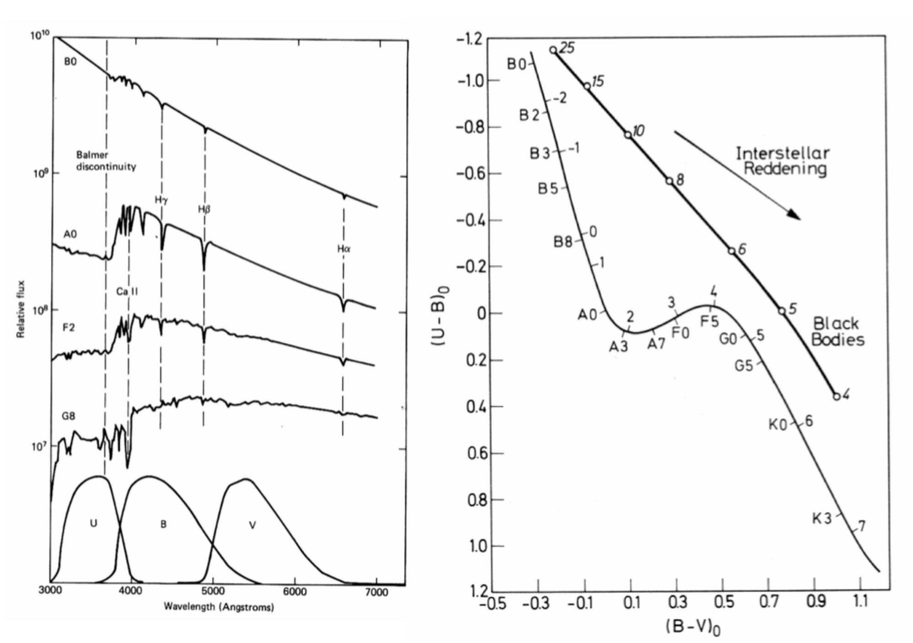
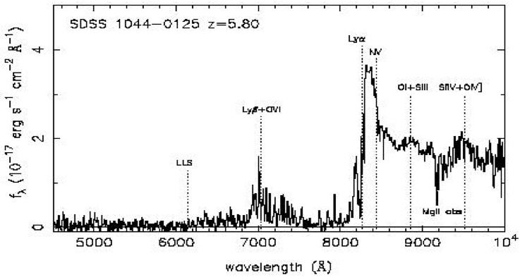
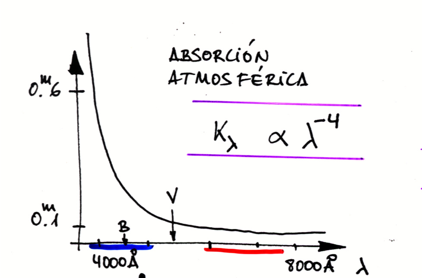
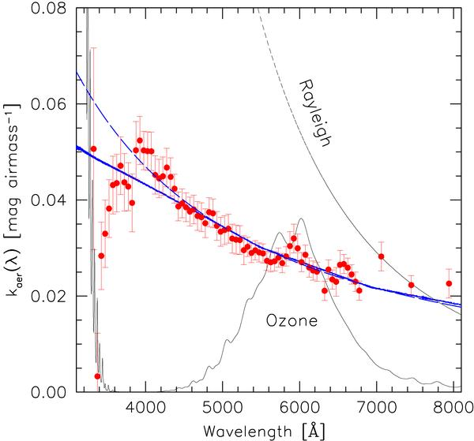
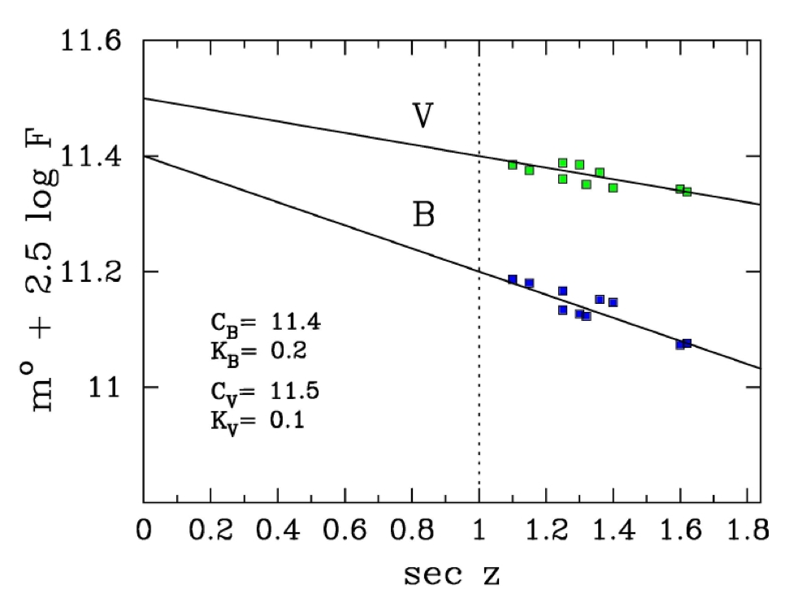
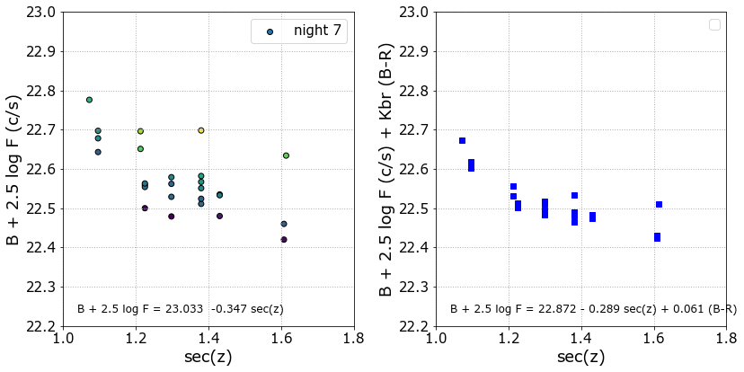

<!DOCTYPE html>

<html>
  <head>
    <meta charset="utf-8" />
    <meta name="viewport" content="width=device-width, initial-scale=1.0" />
    <title>Fotometría &#8212; Técnicas Experimentales en Astrofísica</title>
    
  <link rel="stylesheet" href="../_static/css/index.73d71520a4ca3b99cfee5594769eaaae.css">

    
  <link rel="stylesheet"
    href="../_static/vendor/fontawesome/5.13.0/css/all.min.css">
  <link rel="preload" as="font" type="font/woff2" crossorigin
    href="../_static/vendor/fontawesome/5.13.0/webfonts/fa-solid-900.woff2">
  <link rel="preload" as="font" type="font/woff2" crossorigin
    href="../_static/vendor/fontawesome/5.13.0/webfonts/fa-brands-400.woff2">

    
      
  <link rel="stylesheet"
    href="../_static/vendor/open-sans_all/1.44.1/index.css">
  <link rel="stylesheet"
    href="../_static/vendor/lato_latin-ext/1.44.1/index.css">

    
    <link rel="stylesheet" href="../_static/pygments.css" type="text/css" />
    <link rel="stylesheet" href="../_static/sphinx-book-theme.40e2e510f6b7d1648584402491bb10fe.css" type="text/css" />
    <link rel="stylesheet" type="text/css" href="../_static/togglebutton.css" />
    <link rel="stylesheet" type="text/css" href="../_static/copybutton.css" />
    <link rel="stylesheet" type="text/css" href="../_static/mystnb.css" />
    <link rel="stylesheet" type="text/css" href="../_static/sphinx-thebe.css" />
    <link rel="stylesheet" type="text/css" href="../_static/panels-main.c949a650a448cc0ae9fd3441c0e17fb0.css" />
    <link rel="stylesheet" type="text/css" href="../_static/panels-variables.06eb56fa6e07937060861dad626602ad.css" />
    
  <link rel="preload" as="script" href="../_static/js/index.3da636dd464baa7582d2.js">

    <script id="documentation_options" data-url_root="../" src="../_static/documentation_options.js"></script>
    <script src="../_static/jquery.js"></script>
    <script src="../_static/underscore.js"></script>
    <script src="../_static/doctools.js"></script>
    <script src="../_static/language_data.js"></script>
    <script src="../_static/togglebutton.js"></script>
    <script src="../_static/clipboard.min.js"></script>
    <script src="../_static/copybutton.js"></script>
    <script >var togglebuttonSelector = '.toggle, .admonition.dropdown, .tag_hide_input div.cell_input, .tag_hide-input div.cell_input, .tag_hide_output div.cell_output, .tag_hide-output div.cell_output, .tag_hide_cell.cell, .tag_hide-cell.cell';</script>
    <script src="../_static/sphinx-book-theme.d31b09fe5c1d09cb49b26a786de4a05d.js"></script>
    <script async="async" src="https://cdnjs.cloudflare.com/ajax/libs/mathjax/2.7.7/latest.js?config=TeX-AMS-MML_HTMLorMML"></script>
    <script type="text/x-mathjax-config">MathJax.Hub.Config({"tex2jax": {"inlineMath": [["\\(", "\\)"]], "displayMath": [["\\[", "\\]"]], "processRefs": false, "processEnvironments": false}})</script>
    <script async="async" src="https://unpkg.com/thebelab@latest/lib/index.js"></script>
    <script >
        const thebe_selector = ".thebe"
        const thebe_selector_input = "pre"
        const thebe_selector_output = ".output"
    </script>
    <script async="async" src="../_static/sphinx-thebe.js"></script>
    <link rel="index" title="Index" href="../genindex.html" />
    <link rel="search" title="Search" href="../search.html" />
    <link rel="next" title="Espectroscopía" href="espectroscopia.html" />
    <link rel="prev" title="Técnicas Experimentales en Astrofísica" href="index.html" />

    <meta name="viewport" content="width=device-width, initial-scale=1" />
    <meta name="docsearch:language" content="en" />


  </head>
  <body data-spy="scroll" data-target="#bd-toc-nav" data-offset="80">
    

    <div class="container-xl">
      <div class="row">
          
<div class="col-12 col-md-3 bd-sidebar site-navigation show" id="site-navigation">
    
        <div class="navbar-brand-box">
<a class="navbar-brand text-wrap" href="../index.html">
  
  
  
  
  <h1 class="site-logo" id="site-title">Técnicas Experimentales en Astrofísica</h1>
  
</a>
</div><form class="bd-search d-flex align-items-center" action="../search.html" method="get">
  <i class="icon fas fa-search"></i>
  <input type="search" class="form-control" name="q" id="search-input" placeholder="Search this book..." aria-label="Search this book..." autocomplete="off" >
</form>
<nav class="bd-links" id="bd-docs-nav" aria-label="Main navigation">
    <p class="caption collapsible-parent">
 <span class="caption-text">
  Documentos
 </span>
</p>
<ul class="current nav sidenav_l1">
 <li class="toctree-l1 current active collapsible-parent">
  <a class="reference internal" href="index.html">
   Técnicas Experimentales en Astrofísica
  </a>
  <ul class="current collapse-ul">
   <li class="toctree-l2 current active">
    <a class="current reference internal" href="#">
     Fotometría
    </a>
   </li>
   <li class="toctree-l2">
    <a class="reference internal" href="espectroscopia.html">
     Espectroscopía
    </a>
   </li>
   <li class="toctree-l2">
    <a class="reference internal" href="P1_Introduccion.html">
     P1_Introducción
    </a>
   </li>
   <li class="toctree-l2">
    <a class="reference internal" href="P2_Fotometria_CCD.html">
     P2 Fotometría CCD
    </a>
   </li>
   <li class="toctree-l2">
    <a class="reference internal" href="P3_Espectroscopia_Rendija_Larga.html">
     P3 Espectroscopía de Rendija Larga
    </a>
   </li>
   <li class="toctree-l2">
    <a class="reference internal" href="about_py.html">
     About Python
    </a>
   </li>
  </ul>
  <i class="fas fa-chevron-down">
  </i>
 </li>
</ul>
<p class="caption collapsible-parent">
 <span class="caption-text">
  Notebooks
 </span>
</p>
<ul class="nav sidenav_l1">
 <li class="toctree-l1">
  <a class="reference internal" href="../notebooks/index-notebooks.html">
   TEA Notebooks
  </a>
 </li>
 <li class="toctree-l1">
  <a class="reference internal" href="../notebooks/fotometria_1.html">
   Ajuste Bouger y término de color
  </a>
 </li>
</ul>

</nav> <!-- To handle the deprecated key -->

<div class="navbar_extra_footer">
  Powered by <a href="https://jupyterbook.org">Jupyter Book</a>
</div>

</div>


          


          
<main class="col py-md-3 pl-md-4 bd-content overflow-auto" role="main">
    
    <div class="row topbar fixed-top container-xl">
    <div class="col-12 col-md-3 bd-topbar-whitespace site-navigation show">
    </div>
    <div class="col pl-2 topbar-main">
        
        <button id="navbar-toggler" class="navbar-toggler ml-0" type="button" data-toggle="collapse"
            data-toggle="tooltip" data-placement="bottom" data-target=".site-navigation" aria-controls="navbar-menu"
            aria-expanded="true" aria-label="Toggle navigation" aria-controls="site-navigation"
            title="Toggle navigation" data-toggle="tooltip" data-placement="left">
            <i class="fas fa-bars"></i>
            <i class="fas fa-arrow-left"></i>
            <i class="fas fa-arrow-up"></i>
        </button>
        
        
<div class="dropdown-buttons-trigger">
    <button id="dropdown-buttons-trigger" class="btn btn-secondary topbarbtn" aria-label="Download this page"><i
            class="fas fa-download"></i></button>

    <div class="dropdown-buttons">
        <!-- ipynb file if we had a myst markdown file -->
        
        <!-- Download raw file -->
        <a class="dropdown-buttons" href="../_sources/docs/fotometria.md"><button type="button"
                class="btn btn-secondary topbarbtn" title="Download source file" data-toggle="tooltip"
                data-placement="left">.md</button></a>
        <!-- Download PDF via print -->
        <button type="button" id="download-print" class="btn btn-secondary topbarbtn" title="Print to PDF"
            onClick="window.print()" data-toggle="tooltip" data-placement="left">.pdf</button>
    </div>
</div>

        <!-- Source interaction buttons -->


        <!-- Full screen (wrap in <a> to have style consistency -->
        <a class="full-screen-button"><button type="button" class="btn btn-secondary topbarbtn" data-toggle="tooltip"
                data-placement="bottom" onclick="toggleFullScreen()" aria-label="Fullscreen mode"
                title="Fullscreen mode"><i
                    class="fas fa-expand"></i></button></a>

        <!-- Launch buttons -->

    </div>

    <!-- Table of contents -->
    <div class="d-none d-md-block col-md-2 bd-toc show">
        
        <div class="tocsection onthispage pt-5 pb-3">
            <i class="fas fa-list"></i> Contents
        </div>
        <nav id="bd-toc-nav">
            <ul class="nav section-nav flex-column">
 <li class="toc-h2 nav-item toc-entry">
  <a class="reference internal nav-link" href="#fotometria-astronomica">
   Fotometría astronómica
  </a>
  <ul class="nav section-nav flex-column">
   <li class="toc-h3 nav-item toc-entry">
    <a class="reference internal nav-link" href="#sistemas-fotometricos">
     Sistemas fotométricos
    </a>
   </li>
   <li class="toc-h3 nav-item toc-entry">
    <a class="reference internal nav-link" href="#sistemas-vega-ab-y-st">
     Sistemas Vega, AB y ST
    </a>
   </li>
   <li class="toc-h3 nav-item toc-entry">
    <a class="reference internal nav-link" href="#fotometria-visual-y-fotografica">
     Fotometría visual y fotográfica
    </a>
   </li>
   <li class="toc-h3 nav-item toc-entry">
    <a class="reference internal nav-link" href="#fotometria-fotoelectrica">
     Fotometría fotoeléctrica
    </a>
   </li>
   <li class="toc-h3 nav-item toc-entry">
    <a class="reference internal nav-link" href="#fotometria-ccd">
     Fotometría CCD
    </a>
   </li>
   <li class="toc-h3 nav-item toc-entry">
    <a class="reference internal nav-link" href="#fotometria-absoluta">
     Fotometría absoluta
    </a>
    <ul class="nav section-nav flex-column">
     <li class="toc-h4 nav-item toc-entry">
      <a class="reference internal nav-link" href="#ecuaciones-fundamentales">
       Ecuaciones fundamentales
      </a>
     </li>
     <li class="toc-h4 nav-item toc-entry">
      <a class="reference internal nav-link" href="#observaciones-de-calibracion-para-fotometria-absoluta">
       Observaciones de calibración para fotometría absoluta
      </a>
     </li>
    </ul>
   </li>
   <li class="toc-h3 nav-item toc-entry">
    <a class="reference internal nav-link" href="#transformacion-al-sistema-estandar">
     Transformación al sistema estándar
    </a>
    <ul class="nav section-nav flex-column">
     <li class="toc-h4 nav-item toc-entry">
      <a class="reference internal nav-link" href="#pasos-en-la-reduccion-de-las-observaciones">
       Pasos en la reducción de las observaciones:
      </a>
     </li>
    </ul>
   </li>
   <li class="toc-h3 nav-item toc-entry">
    <a class="reference internal nav-link" href="#fotometria-diferencial">
     Fotometría diferencial
    </a>
   </li>
   <li class="toc-h3 nav-item toc-entry">
    <a class="reference internal nav-link" href="#fotometria-de-objetos-extensos">
     Fotometría de objetos extensos
    </a>
    <ul class="nav section-nav flex-column">
     <li class="toc-h4 nav-item toc-entry">
      <a class="reference internal nav-link" href="#magnitud-integrada">
       magnitud integrada
      </a>
     </li>
     <li class="toc-h4 nav-item toc-entry">
      <a class="reference internal nav-link" href="#brillo-superficial">
       brillo superficial
      </a>
     </li>
     <li class="toc-h4 nav-item toc-entry">
      <a class="reference internal nav-link" href="#isofotas">
       isofotas
      </a>
     </li>
     <li class="toc-h4 nav-item toc-entry">
      <a class="reference internal nav-link" href="#brillo-de-fondo-de-cielo">
       brillo de fondo de cielo
      </a>
     </li>
     <li class="toc-h4 nav-item toc-entry">
      <a class="reference internal nav-link" href="#perfiles-de-brillo">
       perfiles de brillo
      </a>
     </li>
    </ul>
   </li>
   <li class="toc-h3 nav-item toc-entry">
    <a class="reference internal nav-link" href="#fotometria-sintetica-a-partir-de-espectros">
     Fotometría sintética a partir de espectros
    </a>
   </li>
  </ul>
 </li>
 <li class="toc-h2 nav-item toc-entry">
  <a class="reference internal nav-link" href="#observaciones-de-fotometria-ccd">
   Observaciones de fotometría CCD
  </a>
 </li>
</ul>

        </nav>
        
    </div>
</div>
    <div id="main-content" class="row">
        <div class="col-12 col-md-9 pl-md-3 pr-md-0">
        
              <div>
                
  <div class="section" id="fotometria">
<h1>Fotometría<a class="headerlink" href="#fotometria" title="Permalink to this headline">¶</a></h1>
<div class="admonition note">
<p class="admonition-title">Note</p>
<p>Este capítulo asume conocimientos básicos de fotometría astronómica
explicados en la signaturas de Astrofísica previas al Máster.
En particular de Astrofísica y de Astronomía Observacional del Grado en Física
y de Instrumentación Astronómica del máster en Astrofísica.</p>
</div>
<div class="section" id="fotometria-astronomica">
<h2>Fotometría astronómica<a class="headerlink" href="#fotometria-astronomica" title="Permalink to this headline">¶</a></h2>
<p>La fotometría astronómica es una medida directa del flujo de energía recibido de los objetos celestes. Las medidas se realizan en bandas fotométricas que seleccionan el intervalo espectral. Es una técnica menos exigente que la espectroscopía en cuanto a tiempo de exposición porque se integra el flujo en un intervalo espectral. Las bandas fotométricas están caracterizadas por la combinación de la transmisión de los filtros y la respuesta espectral de los detectores (y por todos los elementos ópticos en el telescopio).</p>
<p>Con la fotometría astronómica realizada mediante detectores de imagen se pueden obtener las magnitudes de todos los objetos del campo registrados de manera simultánea. Esto es muy útil si observaos un cúmulo de estrellas o un campo cosmológico lleno de galaxias. La combinación de observaciones en diferentes bandas fotomçetricas nos ayuda a determinar las propiedades de estos objetos celestes. Con los datos de magnitudes y colores podemos, por ejemplo, clasificar las estrellas usando un diagrama color-color. El análisis de las de curvas de luz (variación temporal de su magnitud) informa sobre la naturaleza de las estrellas variables y sobre parámetros de las binarias. La fotomería se emplea también para determinar distancias y tamaños.</p>
<div class="figure align-default" id="spectra-color-fig">
<a class="reference internal image-reference" href="../_images/foto_00_spectra-color.png"></a>
<p class="caption"><span class="caption-number">Fig. 1 </span><span class="caption-text">(Izquierda) Bandas U, B, y V de Johnson (abajo) junto a espectros de estrellas de fiferentes tipos espectrales. (Derecha) Las estrellas de diferentes tipos espectrales aparecen en diferentes lugares del diagrama color-color  (U-B) versus (B-V).</span><a class="headerlink" href="#spectra-color-fig" title="Permalink to this image">¶</a></p>
</div>
<p>Como ejemplo de cómo se buscan y encuentran objetos a alto redshift usando técnicas fotométricas se muestra el trabajo de Esther Hu y colaboradores (<a class="reference external" href="https://iopscience.iop.org/article/10.1086/312205">“An Extremely Luminous Galaxy at z = 5.74” Esther M. Hu, Richard G. McMahon, &amp; Lennox L. Cowie 1999, ApJ Letters, 522, L9)</a></p>
<div class="figure align-default" id="images-hu-fig">
<a class="reference internal image-reference" href="../_images/foto_05_Hu_images.png"></a>
<p class="caption"><span class="caption-number">Fig. 2 </span><span class="caption-text">Keck image of the field around a luminous galaxy at redshift 5.74 in the Constellation of Aquarius. Deep exposures at far red and infrared wavelengths were combined to make this picture. An image taken in a narrowband filter which captures light from the redshifted 1216 Å Hydrogen Lyman alpha line excited by star formation is responsible for the green halo around the faint, distant galaxy at the center, and shows that substantial star formation is taking place. (Derecha) Imágenes individuales en diferentes bandas fotométricas incluyendo la banda estrecha en 8185 Å (anchura 115 Å).</span><a class="headerlink" href="#images-hu-fig" title="Permalink to this image">¶</a></p>
</div>
<div class="figure align-default" id="sed-hu-fig">
<a class="reference internal image-reference" href="../_images/foto_04_Hu_SED.png"></a>
<p class="caption"><span class="caption-number">Fig. 3 </span><span class="caption-text">Distribución espectral de energía (SED) del candidato a galaxia a z=5.74 mostrando un exceso de emisión en el filtro estrecho sintonizado a Ly alpha a ese desplazamiento al rojo.</span><a class="headerlink" href="#sed-hu-fig" title="Permalink to this image">¶</a></p>
</div>
<div class="figure align-default" id="spectrum-hu-fig">
<a class="reference internal image-reference" href="../_images/foto_06_Hu_spectrum.png"></a>
<p class="caption"><span class="caption-number">Fig. 4 </span><span class="caption-text">Una vez tomado el espectro de la candidata (‘folow-up observations’) se comprueba que efectivamente tiene Ly alpha en emisión al z esperado. 1216 x (1+z) = 1216 x 6.8 = 8269 Å</span><a class="headerlink" href="#spectrum-hu-fig" title="Permalink to this image">¶</a></p>
</div>
<p><a class="reference external" href="http://www.ifa.hawaii.edu/faculty/hu/redshift_5.7.html">Más información</a></p>
<div class="section" id="sistemas-fotometricos">
<h3>Sistemas fotométricos<a class="headerlink" href="#sistemas-fotometricos" title="Permalink to this headline">¶</a></h3>
<p>Una información completa sobre los sistemas fotométricos se puede encontrar en la revisión Bessel 2005ARA&amp;A..43..293B. El enlace al documento en <a class="reference external" href="http://www.mso.anu.edu.au/~bessell/araapaper.pdf">Standard Photometric Systems by Michael S Bessel </a></p>
<p>Los sistemas fotométricos surgen de la necesidad de estudiar diferentes tipos de objetos celestes. Se caracterizan por un conjunto de bandas fotométricas. Las bandas fotométricas están definidas por la transmisión del filtro y la respuesta espectral de los detectores.</p>
<p>Tal vez el más conocido es el sistema de Johnson-Cousins UBVRI que nos sirve como ejemplo de fotometría de banda ancha. Este sistema usa en su origen fotomultiplicadores que permite mediante diferentes combinaciones de filtros definir las bandas espectrales mencionadas. Se aprovechó la mejor tecnología de detectores del momento y filtros comerciales. Para defiir la banda V original, por ejemplo, Johnson(1955) usó en principio filtros Schott GG14 que ahora se llaman GG495 (corte azul de la banda) y la caída de respuesta espectral del fotocátofo S4 del fotomultiplicador 1P21. Véase, por ejemplo, <a class="reference external" href="http://adsabs.harvard.edu/full/1990PASP..102.1181B">‘UBVRI passbands’ by Bessell, M. S. 1990PASP..102.1181B</a></p>
<p>Los sistemas fotométricos deben ser definidos con ayuda de observaciones de estrellas en esas bandas de forma que se establece una lista de magnitudes y colores estándar para un conjunto de estrellas que sirven de referencia. Los astrónomos que quieran medir objetos celestes en un sistema estándar deben usar la instrumentación adecuada y transformar sus observaciones a ese sistema estándar mediante observaciones de estrellas de la lista original o de estrellas bien calibradas en ese sistema (estrellas estándar). Las magnitudes observadas deben ser corregidas de extinción atmosférica (magnitudes fuera de la atmósfera). Para ello se necesitan observaciones de fotometría absoluta como se verá más adelante.</p>
<p>De acuerdo al ancho de banda los sistemas fotométricos se clasifican
Banda ancha    |    Δλ &lt; 100 nm     | (broad-band)
Banda media    |  7 nm &lt; Δλ&lt; 40 nm  | (intermediate-band)
Banda estrecha |    Δλ &lt; 7 nm       | (narrow-band)</p>
<p>Existen versiones modernas de los sistemas fotométricos más antiguos que se han ido desarrollando según se disponía de detectores más sensibles y, en particular de detectores panorámicos como los CDs.</p>
<p>Se pueden citar algunos ejemplos de sistemas fotométricos: Johnson-Cousins-Glass UBVRIJHKLM, Strömgen u v b y bn bw, Sloan u’ g’ r’ i’ z’. Los astrónomos aficionados suelen observar con filtros de colores que definen bandas RGB similares a las que producen los sistemas de cámaras de color que usamos en nuestra vida diaria.</p>
<div class="figure align-default" id="girardi-ubvri-fig">
<a class="reference internal image-reference" href="../_images/foto_10_UBVRI.gif"></a>
</div>
<div class="figure align-default" id="girardi-sloan-fig">
<a class="reference internal image-reference" href="../_images/foto_12_sloan.png"></a>
<p class="caption"><span class="caption-number">Fig. 5 </span><span class="caption-text">Representación de las bandas de diversos sistemas fotométricos junto al espectro del sol y de una estrella azul y otra roja. Fuente: Girardi, L. et al. “Theoretical isochrones in several photometric systems
I. Johnson-Cousins-Glass, HST/WFPC2, HST/NICMOS, Washington, and ESO Imaging Survey filter sets” A&amp;A 391, 195-212 (2002) and Girardi, L. et al. “Theoretical isochrones in several photometric systems. II. The Sloan Digital Sky Survey ugriz system.” A&amp;A 422 (2004): 205-215.</span><a class="headerlink" href="#girardi-sloan-fig" title="Permalink to this image">¶</a></p>
</div>
</div>
<div class="section" id="sistemas-vega-ab-y-st">
<h3>Sistemas Vega, AB y ST<a class="headerlink" href="#sistemas-vega-ab-y-st" title="Permalink to this headline">¶</a></h3>
<p>Una importante fuente de confusión, incluso dentro de la literatura publicada por
astrómos profesionales, es la clara definición del sistema fotométrico utilizado. Esto incluye 3 ingredientes. El primero lo define la curva de sensibilidad espectral del filtro (en la gráfica se representan los tradicionales filtros de Johnson-Cousins UBVRI, usando las curvas actualizadas por Bessell &amp; Murphy 2012). El segundo es el parámetro físico a integrar dentro de cada filtro. Aquí hay varias opciones: i) energía (en unidades FLAM erg s-1 cm-2 Å-1, o FNU erg s-1 cm-2 Hz-1), o ii) fotones (en unidades PHOTLAM photon s-1 cm-2 Å-1, o PHOTNU photon s-1 cm-2 Hz-1).</p>
<p>El tercer ingrediente es el espectro de referencia que determina el cero en la escala de magnitudes: sistema VEGA, sistema AB (Oke &amp; Gunn, 1983, referencia constante en densidad de flujo por unidad de frecuencia), o sistema ST (Koornneef et al., 1986, referencia constante en densidad de flujo por unidad de longitud de onda).</p>
<div class="figure align-default" id="cardiel-vega-ab-st-fig">
<a class="reference internal image-reference" href="../_images/foto_13_Vega_AB_ST.png"></a>
<p class="caption"><span class="caption-number">Fig. 6 </span><span class="caption-text">Representación de los tres espectros de referencia (en unidades PHOTLAM).</span><a class="headerlink" href="#cardiel-vega-ab-st-fig" title="Permalink to this image">¶</a></p>
</div>
<p>La magnitud en una cierta banda fotométrica S(λ) de un objeto celeste de disrtribución espectral de energía F(λ) se determina como,</p>
<div class="math notranslate nohighlight">
\[
  m(\lambda) =  -2.5 log_{10} \int_0^\infty \frac{F(\lambda) S(\lambda) d\lambda }{F_o(\lambda) S(\lambda) d\lambda }
\]</div>
<p>donde <span class="math notranslate nohighlight">\(F_o(\lambda)\)</span> es la distribución espectral de energía de la fuente de referencia para fijar el punto cero de la fotometría. Por ejemplo para la banda V de Johnson-Cousins V band podemos usar el espectro de Vega (<span class="math notranslate nohighlight">\(\alpha\)</span> Lyrae) y fijar V(Vega) = 0 (como en su definición original, aunque luego resulta que V(Vega) = 0.03) o, la referencia absoluta (AB) de 3631 definido por Oke (1974) <span class="math notranslate nohighlight">\(F_o(\lambda)  = 3631 \times (c/\lambda^2) \times 10^{-26} W/m^2/m\)</span> donde   <span class="math notranslate nohighlight">\(𝑐 = 2.99792458 × 10^8 m s^{-1}\)</span> es la velocidad de la luz en el vacío, <span class="math notranslate nohighlight">\(\lambda\)</span> es la longitud de onda en m y Jy (jansky) es una unidad fuera del sistema internacional SI de irradiancia espectral Jy = <span class="math notranslate nohighlight">\(10^{-26}
W m^{-2} Hz^{-1}\)</span>. Puede verse un análisis completo en <a class="reference external" href="https://eprints.ucm.es/60386/19/zamorano143postprint.pdf">Bará et al (2020)</a>.</p>
<p>Los sistemas fotométricos usaban tradicionalmente a Vega como estrella de referencia y el problema es la dificultad de obtener una calibración absoluta precisa de esta estrella. Por eso actualmente se prefiere usar magnitudes AB.</p>
</div>
<div class="section" id="fotometria-visual-y-fotografica">
<h3>Fotometría visual y fotográfica<a class="headerlink" href="#fotometria-visual-y-fotografica" title="Permalink to this headline">¶</a></h3>
<p>La clasificación de estrellas de acuerdo a su brillo aparente que realizó el astrónomo griego Hiparcos está basada en la comparación de sus observaciones a simple vista sin ninguna instrumentación óptica. Estableció una escala de magnitudes siendo las estrellas en la categoría de primera magnitud las más brillantes. Esta ‘fotometría visual’ utiliza el ojo humano como detector y no emplea filtros. Por lo tanto la banda de paso viene definida por la respuesta espectral del ojo. Todavía hoy en día se utiliza la fotometría visual en observaciones de astrónomos aficionados que pueden observar y medir (por comparación) las magnitudes de estrellas más débiles que el límite impuesto por la sensibilidad del ojo.</p>
<p>Con el desarollo de la fotografía a mediados del siglo XIX se dispuso de un detector que colocado en el foco de un telescopio permitía registrar estrellas más débiles y en un rango espectral diferente a la banda visual. Con emulsiones fotográficas sensibles en diferentes intervalos espectrales (detector) y filtros se podían tomar imágenes de campos estelares o de objetos extensos (al ser un detector de imagen o panorámico) en difrentes bandas fotométricas. Estas observaciones de ‘fotometría fotográfica’, a diferencia de las visuales, dejan una placa fotográfica  que, correctamente almacenada, puede volver a medirse  las veces que se desee incluso después de muchos años. aunque su formato no es digital, las placas pueden ser escaneadas para producir un fichero tratable con ordenadores.</p>
</div>
<div class="section" id="fotometria-fotoelectrica">
<h3>Fotometría fotoeléctrica<a class="headerlink" href="#fotometria-fotoelectrica" title="Permalink to this headline">¶</a></h3>
<p>Los astrónomos utilizaton en sus observaciones los fotodetectores más sencillos en cuanto éstos estuvieron disponibles. La ‘Fotometría Fotoeléctrica’ supuso un gran avance en sensibilidad permitiendo observar y medir objetos más débiles. Los fotómetros fotoeléctricos tienen como detector una célula fotoeléctrica o mejor un fotomultiplicador. Este dispositivo
electrónico transforma los fotones incidentes en corriente eléctrica que puede ser medida. Las ventajas principales son su linealidad, de la que carece la emulsión fotográfica, y su mayor eficiencia cuántica.</p>
<ul class="simple">
<li><p>Stebbins, Whitford &amp; Kron  (ca. 1940)         fotocélulas</p></li>
<li><p>Johnson, Morgan, Whitford et al. (ca. 1950)   fotomultiplicadores</p>
<ul>
<li><p>RCA 1P21 (fotomultiplicador sensible al azul)</p></li>
<li><p>Sistema de Johnson  bandas U B V con RCA 1P21</p></li>
</ul>
</li>
<li><p>Sistema de Strömgren ubvy</p></li>
<li><p>Kron (1958)    Fotocátodo S1  (sensible al rojo)</p></li>
<li><p>Johnson et al. (1966)   bandas R I</p>
<ul>
<li><p>Fotocátodo S25 y GaAs (mucho más sensibles que 1P21)</p></li>
</ul>
</li>
<li><p>Bessel (1976) U B V R I con el mismo fotomultiplicador</p>
<ul>
<li><p>Aumento de la lista de estándars primarias y secundarias
Cousins (1976-1980)     Cousins UBVRI
Landolt (1973-1983)     Landolt UBVRI</p></li>
</ul>
</li>
</ul>
<p>Desgraciadamente estos sistemas son algo diferentes por usar filtros distintos.</p>
</div>
<div class="section" id="fotometria-ccd">
<h3>Fotometría CCD<a class="headerlink" href="#fotometria-ccd" title="Permalink to this headline">¶</a></h3>
<p>La fotometría fotoeléctrica sólo permite observar una estrella cada vez o una parte de un objeto extenso, es decir que no tiene la capacidad de un detector de imagen con resolución espacial. La ‘Fotometría CCD’ (casi la única que se usa en la actualidad) desplazó a la fotometría fotoeléctrica ya que tiene como gran ventaja el uso de un detector panorámico. Las imágenes obtenidas con un detector CCD contienen información de los objetos celestes contenidos en el campo de visión del sistema. Estas observaciones simultáneas de múltiples objetos tienen la gran ventaja del ahorro de tiempo de observación y la garantía de observación en el mismo lapso de tiempo lo que es ideal para fotometría diferencial.</p>
<p>Por citar algunos inconvenientes tenemos los propios de la observación con CCDs (tiempos muertos leyendo el detector, por ejemplo) y el procesado de las imágenes CCD. Con la fotometría fotoeléctrica se obtenían mejor precisión fotométrica en menos tiempo de observación. También existen problemas relacionados con la variación de la transmisión de los filtros interferenciales con el ángulo de llegada de la luz, lo que se traduce en diferencias de banda de paso en zonas de la imagen según te alejas del eje óptico. También existe una gran variedad de CCDs en el mercado con diferencias considerables en la respuesta espectral en el azul que no facilitan la calibración de la banda U, por ejemplo.</p>
<p>Todos estos inconvenientes quedan en un segundo plano con la facilidad de uso de los CCDs y de su procesado posterior. Los CCDs se sitúan en criostatos que mantienen la temperatura del chip a temperatiras bajas (-120ºC típicamente) para evitar ruido térmico y con estabilización de temperatura para mantener su sensibilidad constante a lo largo de la observación.</p>
</div>
<div class="section" id="fotometria-absoluta">
<h3>Fotometría absoluta<a class="headerlink" href="#fotometria-absoluta" title="Permalink to this headline">¶</a></h3>
<p>Las observaciones de fotometría astronómica necesitan, aparte de las observaciones de los objetos problema que son nuestro objetivo científico, medir los flujos de estrellas estándar (magnitud conocida) para calibrar nuestro sistema. De nuestras magnitudes instrumentales queremos llegar a magnitudes en el sistema estándar de manera que cualquier otro grupo de investigación pueda comparar sus medidas con las nuestras.</p>
<div class="highlight-none notranslate"><div class="highlight"><pre><span></span>La fotometría de objetos celestes deben presentar en sus resultados 
magnitudes corregidas del efecto de la atmósfera y referidos al sistema estándar 
</pre></div>
</div>
<p>Recordemos lo fundamental de la fotometría absoluta. La atmósfera terrestre actúa como un filtro absorbiendo parte de la radiación que la atraviesa. La absorción depende de la frecuencia de los fotones. El contribuyente principal de la extinción es la difusión Rayleight. El ozono impide observar por debajo de ~300nm que es el límite abrupto de nuestra atmósfera. Mientras la extinción por dispersión de Rayleight depende de lambda^-4, la extinción por aerosoles (partículas de polvo fino, gotas de agua y contaminación atmosférica que se encuentran más bajas que las moléculas que causan la difusión Rayleigh) depende poco de λ: es más gris.</p>
<p>La fotometría absoluta es un método observacional que permite determinar la magnitud de los objetos observados. Hay que observar estrellas estándar a lo largo de la noche para determinar el coeficiente de extinción y la constante instrumental.</p>
<div class="sphinx-bs container pb-4 docutils">
<div class="row docutils">
<div class="d-flex col-lg-6 col-md-6 col-sm-6 col-xs-12 p-2 docutils">
<div class="card w-100 shadow docutils">
<div class="card-body docutils">
<div class="figure align-default" id="id4">

<p class="caption"><span class="caption-number">Fig. 7 </span><span class="caption-text">La absorción atmosférica en el visible depende fuertemente de la longitud de onda.</span><a class="headerlink" href="#id4" title="Permalink to this image">¶</a></p>
</div>
</div>
<div class="card-footer docutils">
</div>
</div>
</div>
<div class="d-flex col-lg-6 col-md-6 col-sm-6 col-xs-12 p-2 docutils">
<div class="card w-100 shadow docutils">
<div class="card-body docutils">
<div class="figure align-default" id="id5">

<p class="caption"><span class="caption-number">Fig. 8 </span><span class="caption-text">Curva de extinción media y los diferentes componentes.</span><a class="headerlink" href="#id5" title="Permalink to this image">¶</a></p>
</div>
</div>
</div>
</div>
</div>
</div>
<div class="sphinx-bs container pb-4 docutils">
<div class="row docutils">
<div class="d-flex col-lg-6 col-md-6 col-sm-6 col-xs-12 p-2 docutils">
<div class="card w-100 shadow docutils">
<div class="card-body docutils">
<div class="figure align-default" id="id6">

<p class="caption"><span class="caption-number">Fig. 9 </span><span class="caption-text">Modelo de transmisión media de la atmósfera para Cerro Paranal. Patat et al. A&amp;A
527 (2011) A91 https://doi.org/10.1051/0004-6361/201015537</span><a class="headerlink" href="#id6" title="Permalink to this image">¶</a></p>
</div>
</div>
<div class="card-footer docutils">
</div>
</div>
</div>
<div class="d-flex col-lg-6 col-md-6 col-sm-6 col-xs-12 p-2 docutils">
<div class="card w-100 shadow docutils">
<div class="card-body docutils">
<div class="figure align-default" id="id7">

<p class="caption"><span class="caption-number">Fig. 10 </span><span class="caption-text">Aerosol extinction derived from the observed data and the LBLRTM model. The long-dashed line is a best fit model for kaer(λ), with k0 = 0.014 and α = −1.38. Overplotted are also the Rayleigh (short-dashed), ozone (solid thin curve), and clean tropospheric aerosol (thick solid) Patat et al. A&amp;A 527 (2011) A91 https://doi.org/10.1051/0004-6361/201015537</span><a class="headerlink" href="#id7" title="Permalink to this image">¶</a></p>
</div>
</div>
</div>
</div>
</div>
</div>
<div class="figure align-default" id="caha-extincion-fig">
<a class="reference internal image-reference" href="../_images/foto_caha_extincion.png"></a>
<p class="caption"><span class="caption-number">Fig. 11 </span><span class="caption-text">Curva de extinción media y sus diferentes contribuyentes (izda) y
coeficientes de extinción en Calar Alto y ajuste  de los contribuyentes.
U. Hopp &amp; M. Fernández en Calar Alto Newsletter nov. 2002.</span><a class="headerlink" href="#caha-extincion-fig" title="Permalink to this image">¶</a></p>
</div>
<div class="section" id="ecuaciones-fundamentales">
<h4>Ecuaciones fundamentales<a class="headerlink" href="#ecuaciones-fundamentales" title="Permalink to this headline">¶</a></h4>
<p>En fotometría astronómica usamos el sistema de magnitudes que es una escala logarítmica e inversa. La magnitud observada de un objeto celeste se obtiene a partir del flujo medido con nuestro sistema instrumental. Si tenemos un detector digital que transforma fotones en señal en cuentas (ADUs analog to digital units) la magnitud en una cierta banda se obtiene a partir del flujo medido en cuentas/s</p>
<div class="math notranslate nohighlight">
\[
m_{\lambda}=C_{\lambda} - 2.5 \times log_{10} F_{\lambda}(c/s)
\]</div>
<p>donde</p>
<ul class="simple">
<li><p><span class="math notranslate nohighlight">\(C_{\lambda}\)</span> es la constante instrumental.</p></li>
<li><p><span class="math notranslate nohighlight">\(m_{\lambda}\)</span> es la magnitud observada.</p></li>
<li><p><span class="math notranslate nohighlight">\(F_{\lambda}\)</span> es el flujo neto (corregido de brillo de fondo de cielo) en cuentas por segundo.</p></li>
</ul>
<p>La constante instrumental es un parámetro de nuestro sistema que varía con la banda fotométrica ya que depende de la respuesta espectral de los filtros, de la reflectividad de los espejos, del tamaño del telescopio, de la eficiencia cuántica del detector. No se espera que este parámetro varíe durante una campaña de observación pero puede ser diferente cuando vuelves a observar con el mismo instrumental unos meses después si, por ejemplo, se ha degradado el sistema óptico o han aluminizado de nuevo los espejos del telescopios.</p>
<p>El flujo que medimos en tierra de un objeto celeste es menor que el que mediríamos fuera de la atmósfera ya que ésta absorbe y difunde la radiación que la atraviesa. Esta extinción depende de la transparencia de la atmósfera a cada longitud de onda en un momento dado y en la dirección de observación y del recorrido de la radiación en la atmósfera.</p>
<div class="figure align-default" id="airmass-fig">
<a class="reference internal image-reference" href="../_images/foto_15_airmass.png"></a>
<p class="caption"><span class="caption-number">Fig. 12 </span><span class="caption-text">La extinción atmosférica depende de la cantidad de atmósfera atravesada por la radiación.</span><a class="headerlink" href="#airmass-fig" title="Permalink to this image">¶</a></p>
</div>
<div class="amsmath math notranslate nohighlight">
\[\begin{gather*}
F_{\lambda}=F_{\lambda}^o \times 10^{-0.4 \; K_{\lambda} \; sec(z)}\\
m_{\lambda}=m_{\lambda}^o - K_{\lambda} \; sec(z)
\end{gather*}\]</div>
<p>donde</p>
<ul class="simple">
<li><p><span class="math notranslate nohighlight">\(F_{\lambda}\)</span> es el flujo observado</p></li>
<li><p><span class="math notranslate nohighlight">\(F_{\lambda}^o\)</span> es el flujo fuera de la atmósfera</p></li>
<li><p><span class="math notranslate nohighlight">\(K_{\lambda}\)</span> es el coeficiente de extinción y</p></li>
<li><p>sec(z) la secante de la distancia cenital o masa de aire (airmass).</p></li>
<li><p><span class="math notranslate nohighlight">\(m_{\lambda}\)</span> es la magnitud observada y</p></li>
<li><p><span class="math notranslate nohighlight">\(m_{\lambda}^o\)</span> la magnitud corregida de extinción o magnitud fuera de la atmósfera.</p></li>
</ul>
<p>Para realizar observaciones de fotometría absoluta necesitamos que las condiciones de transparencia de la atmósfera sean buenas y constantes a lo largo de una noche. Esas noches especiales se llaman noches fotométricas. Son noches despejadas con valores pequeños de la extinción: transparentes. Durante la noche se observan estrellas estándar (de flujo bien conocido) en un amplio valor de masas de aire, es decir diferentes alturas sobre el horizonte. La menor extinción (menon masa de aire) se consigue cuando se observa el objeto en el cénit: <span class="math notranslate nohighlight">\(sec(z)=1\)</span>).</p>
<p>Se puede aplicar la técnica de fotometría absoluta a medias noches que de repente se estropean si se han conseguido suficientes observaciones de estrellas estándar pero es peligroso extrapolar. No se recomienda.</p>
<div class="math notranslate nohighlight">
\[
m_{\lambda}=m_{\lambda}^o + K_{\lambda} \; sec(z)
\; ; \; m_{\lambda}=C_{\lambda} - 2.5 \times log_{10} F_{\lambda}(c/s)
\]</div>
<div class="math notranslate nohighlight">
\[
m_{\lambda}^o + 2.5 \times log_{10} F_{\lambda} (c/s) = C_{\lambda} - K_{\lambda} \; sec(z)
\]</div>
<p>De la combinación de las ecuaciones obtenemos la ecuación fundamental que liga las observaciones (flujo <span class="math notranslate nohighlight">\(F_{\lambda} (c/s)\)</span>) de las estrellas estándar cuya magnitud fuera de la atmósfera es conocida <span class="math notranslate nohighlight">\(m_{\lambda}^o\)</span> con la constante instrumental <span class="math notranslate nohighlight">\(C_{\lambda}\)</span>, el coeficiente de extinción <span class="math notranslate nohighlight">\(K_{\lambda}\)</span> y la masa de aire <span class="math notranslate nohighlight">\(sec(z)\)</span>.</p>
<p>Podemos construir la gráfica <span class="math notranslate nohighlight">\(m_{\lambda}^o + 2.5 \times log_{10} F_{\lambda} (c/s)\)</span> versus <span class="math notranslate nohighlight">\(sec(z)\)</span> en la que cada observación de una estrella estándar proporciona un punto. El ajuste de una recta nos proporciona la ordenada en el origen que será <span class="math notranslate nohighlight">\(C_{\lambda}\)</span> y la pendiente <span class="math notranslate nohighlight">\(K_{\lambda}\)</span>. Los puntos seguirán una recta (recta de Bouguer) si el coeficiente de extinción ha permanecido constante a lo largo de la noche que es una condición impuesta a las noches fotométricas. O al revés, cuanto más se separen estas observaciones de una recta peor ha sido la noche.</p>
<div class="figure align-default" id="ecuacion-fig">
<a class="reference internal image-reference" href="../_images/foto_16_ecuacion.png"></a>
</div>
<p>El coeficiente de extinción varía a lo largo de la noche para noches de baja calidad. La transparencia de la atmósfera no tiene por qué ser la misma en todas las direcciones. Las noches fotométricas deben tener transparencia constante en el tiempo y la dirección.</p>
<p>La importancia de esta ecuación es que diferentes estrellas observadas en varios momentos y masas de aire contribuyen a determinar las constantes de la calibración. Si sólo deseáramos determinar la magnitud de un objeto fuera de la atmósfera podríamos observarlo durante toda la noche y usando la ecuación <span class="math notranslate nohighlight">\(m_{\lambda}=m_{\lambda}^o + K_{\lambda} \; sec(z)\)</span> extrapolar a <span class="math notranslate nohighlight">\(sec(z)=0\)</span> (fuera de la atmósfera).</p>
<div class="figure align-default" id="bouguer-1-fig">
<a class="reference internal image-reference" href="../_images/foto_17_Bouguer_1.png"></a>
<p class="caption"><span class="caption-number">Fig. 13 </span><span class="caption-text">Ejemplo de dos rectas de Bouguer ajustadas a observaciones en bandas B y V de Johnson. Nótese la pendiente mayor en la banda B (mayor coeficiente de extinción).</span><a class="headerlink" href="#bouguer-1-fig" title="Permalink to this image">¶</a></p>
</div>
<div class="figure align-default" id="bouguer-2-fig">
<a class="reference internal image-reference" href="../_images/foto_18_Bouguer_2.png"></a>
<p class="caption"><span class="caption-number">Fig. 14 </span><span class="caption-text">La dispersión de los datos da idea de la calidad de la noche y permite estimar la precisión de la fotometría.</span><a class="headerlink" href="#bouguer-2-fig" title="Permalink to this image">¶</a></p>
</div>
<div class="figure align-default" id="id1">
<a class="reference internal image-reference" href="../_images/foto_19_absoluta_metodo.png"></a>
<p class="caption"><span class="caption-number">Fig. 15 </span><span class="caption-text">Las observaciones auxiliares de estrellas estándar nos permiten determinar las constantes instrumentales y el coeficiente de exrtinción de esa noche.</span><a class="headerlink" href="#id1" title="Permalink to this image">¶</a></p>
</div>
<div class="figure align-default" id="id2">
<a class="reference internal image-reference" href="../_images/foto_20_absoluta_calibracion.png"></a>
<p class="caption"><span class="caption-number">Fig. 16 </span><span class="caption-text">Con el flujo en c/s de nuestro objeto de interés podemos determinar la magnitud instrumental y luego corregirla del efecto de la atmósfera gracias a que hemos determinado previamente <span class="math notranslate nohighlight">\(C_\lambda\)</span> y <span class="math notranslate nohighlight">\(K_\lambda\)</span></span><a class="headerlink" href="#id2" title="Permalink to this image">¶</a></p>
</div>
</div>
<div class="section" id="observaciones-de-calibracion-para-fotometria-absoluta">
<h4>Observaciones de calibración para fotometría absoluta<a class="headerlink" href="#observaciones-de-calibracion-para-fotometria-absoluta" title="Permalink to this headline">¶</a></h4>
<p>Se deben seleccionar estrellas estándar de l sistema fotométrico empleado y observarlas en diferentes momentos a lo largo de la noche. Normalmente se haven pausas en las observaciones de los objetos problema para hacer series de observaciiones de estrellas estándar, dos o tres cada noche. Esto permite disponer de medidas en diferentes horas para comprobar la estabilidad de la noche. Se eligen los momentos que no interfieran con nuestro proyecto científico y seleccionamos estrellas para conseguir muestrear a diferentes alturas sobre el horizonte para aumentar el rango de masas de aire.<br />
Durante la observación se puede comprobar si esta estabilidad en cuanto a la transparencia atmosférica se mantiene con ayuda de los instrumentos dedicados a esta monitorización que tiene cada observatorio. Por ejemplo <a class="reference external" href="http://www.caha.es/CAVEX/cavex.php">CAHA extinction monitor</a> es una cámara de 55 grados de campo de visión que observa en dirección norte continuamente para medir el flujo en banda Johnson V de unas 15 o 20 estrellas brillantes y determinar la extinción que puede ser consultada en tiempo real.</p>
<p>Para seleccionar las estrellas se puede recabar la información de artículos y páginas web. Por ejemplo Landolt &amp; Uomoto de 2007 The Astronomical Journal, Volume 133, Issue 3, pp. 768-790 <a class="reference external" href="https://iopscience.iop.org/article/10.1086/510485">Optical Multicolor Photometry of Spectrophotometric Standard Stars</a></p>
<ul class="simple">
<li><p><a class="reference external" href="http://www.ing.iac.es/~astrosw/standards.html">ING standards</a></p></li>
<li><p><a class="reference external" href="https://www.eso.org/sci/observing/tools/standards/spectra.html">ESO Optical and UV Spectrophotometric Standard Stars</a></p></li>
<li><p><a class="reference external" href="http://www.caha.es/pedraz/SSS/sss.html">CAHA Standard Stars and On-line Surveys </a></p></li>
</ul>
<p>Para elegir los mejores momentos de observación de las estrellas estándar se usan las aplicaciones que muestran la posición de las estrellas a lo largo de la noche como</p>
<ul class="simple">
<li><p><a class="reference external" href="http://catserver.ing.iac.es/staralt/index.php">ING STARALT</a></p></li>
<li><p><a class="reference external" href="http://www.caha.es/pedraz/ves.html">CAHA VES</a></p></li>
</ul>
<div class="figure align-default" id="visibility-fig">
<a class="reference internal image-reference" href="../_images/foto_38_standard_visibility.png"></a>
<p class="caption"><span class="caption-number">Fig. 17 </span><span class="caption-text">Gráfico con las alturas y masas de aire de estrellas estándar que pueden ser observadas una noche particular.</span><a class="headerlink" href="#visibility-fig" title="Permalink to this image">¶</a></p>
</div>
<p>En el gráfico realizado con STARALT de la figura se muestra cómo las estrellas de la lista culminan a diferentes horas de la noche de observación de acuerdo a su ascensión recta. El eje Y muestra alturas (izda.) y masas de aire (dcha.) para cada estrella. De todas las estrellas de la lista original se han seleccionado tres (marcadas en rojo) que se observarán en los momentos marcados en magenta. Este es un ejemplo simplificado ya que normalmente se observan más estrellas.</p>
</div>
</div>
<div class="section" id="transformacion-al-sistema-estandar">
<h3>Transformación al sistema estándar<a class="headerlink" href="#transformacion-al-sistema-estandar" title="Permalink to this headline">¶</a></h3>
<p>Los sistemas fotométricos se definen con unas bandas fotométricas y un conjunto de estrellas estándar. Cuando se pretende hacer fotometría refereida a un cierto sistema se busca una instrumentación que proporcione bandas similares. Por mucho cuidado que se tenga cada banda depende de los filtros empleados y de la respuesta espectral del CCD y seguramente difiere de lo empleado a la hora de difinir el sistema fotométrico. Dicho de otro modo la banda Johnson V que estamos usando no es exactamente la banda V que definió Johnson: existen pequeñas diferencias en la banda de paso.</p>
<p>Cuando hacemos fotometría absoluta observamos estrellas cuya magnitud en las bandas del sistema fotométrico son conocidas. Son nuestras fuentes calibradoras. Eso permite determinar el punto cero (zero point) de nuestro sistema (<span class="math notranslate nohighlight">\(C_\lambda\)</span>, constante instrumental) que nos permite pasar de flujos medidos a magnitudes en esa banda. Ocurre con frecuencia que la calibración no es muy buena y muestra dispersión incluso en noches fotométricas y que por lo tanto no es achacable a la variabilidad de la transmisión de la atmósfera.</p>
<div class="figure align-default" id="band-differences-fig">
<a class="reference internal image-reference" href="../_images/foto_21_comp_v_pass.png"></a>
<p class="caption"><span class="caption-number">Fig. 18 </span><span class="caption-text">REPETIR
The transmission curves of the standard Bessell V passband (which is a model for manufacturers of filters), and the “Harris V” filter at the WIYN Telescope at Kitt Peak National Observatory
From: http://spiff.rit.edu/classes/phys445/lectures/color_terms/color_terms.html</span><a class="headerlink" href="#band-differences-fig" title="Permalink to this image">¶</a></p>
</div>
<div class="figure align-default" id="hot-cool-fig">
<a class="reference internal image-reference" href="../_images/foto_22_hot-cool.png"></a>
<p class="caption"><span class="caption-number">Fig. 19 </span><span class="caption-text">REPETIR
Para estrellas de diferentes tipos espectrales estas diferencias de paso de banda son importantes.
From: http://spiff.rit.edu/classes/phys445/lectures/color_terms/color_terms.html</span><a class="headerlink" href="#hot-cool-fig" title="Permalink to this image">¶</a></p>
</div>
<p>El número de total de fotones <span class="math notranslate nohighlight">\(N_\gamma\)</span> (<span class="math notranslate nohighlight">\(fotones/s/cm^2\)</span>) integrado en la banda fotométrica depende del espectro del objeto modulado por la respuesta espectral del sistema <span class="math notranslate nohighlight">\(T(\lambda)\)</span> (véase fotometría sintética). Al integrar los espectros de estrellas de diferentes tipos espectrales modulados por esas respuestas ligeramente diferentes producirán deasjustes que tenemos que corregir.</p>
<p>En el cuaderno de Jupyter ‘Fotometria 1’ se muestra un ejemplo de fotometría absoluta con observaciones en el JKT del observatorio del Roque de los Muchachos realizadas en Julio de 1999 para la tesis doctoral de Pablo Pérez González. Mostramos aquí sólo algunas gráficas.</p>
<div class="figure align-default" id="color-term-1-fig">
<a class="reference internal image-reference" href="../_images/foto_23_JKT_color-term.png"></a>
<p class="caption"><span class="caption-number">Fig. 20 </span><span class="caption-text">Gráfica para las observaciones de estrellas estándar de la noche 7 de la campaña de obsercvación. Se ha codificado el color de cada observación de acuerdo al índice de color de la estrella estándar.</span><a class="headerlink" href="#color-term-1-fig" title="Permalink to this image">¶</a></p>
</div>
<p>Se observa que las estrellas más rojas (índice de color (B-V) más grande) se separan hacia arriba del ajuste sencillo de la recta de Bouguer y viceversa. Pablo Pérez Gonzalez ajustó un término de color en la forma</p>
<div class="amsmath math notranslate nohighlight">
\[\begin{equation*}
m_B + 2.5 log(F_B)  =  C - K_B X + K_{B-R} (B-R) 
\end{equation*}\]</div>
<p>resultando</p>
<div class="figure align-default" id="color-term-2-fig">
<a class="reference internal image-reference" href="../_images/foto_24_JKT_color-term-2.png"></a>
<p class="caption"><span class="caption-number">Fig. 21 </span><span class="caption-text">La dispersión original de los datos observacionales (izda.) ha quedado reducida con la corrección de color (dcha.).</span><a class="headerlink" href="#color-term-2-fig" title="Permalink to this image">¶</a></p>
</div>
<p>|Night   |  <span class="math notranslate nohighlight">\(C_B\)</span> | <span class="math notranslate nohighlight">\(K_B\)</span> | <span class="math notranslate nohighlight">\(K_{B-R}\)</span> |</p>
<p>|Night 1 | 23.096 | 0.506 | 0.045     |</p>
<p>|Night 2 | 22.770 | 0.204 | 0.056     |</p>
<p>|Night 6 | 22.754 | 0.197 | 0.061     |</p>
<p>|Night 7 | 22.872 | 0.289 | 0.061     |</p>
<p>El resultado final del ajuste de rectas de Bouguer a cada noche muestra que la primera noche fue de peor transparencia. Las constantes instrumentales determinadas son un poco diferentes de noche a noche, lo que no es esperable. Una mejor determinación sería obligar en los ajustes a que la constante instrumental sea la misma a lo largo de toda la campaña.</p>
<p>Para aplicar este término de color a las observaciones de los objetos problema se necesita observar éstos en al menos las dos bandas utilizadas y, por supuesto, conocer las magnitudes de las estrellas estándar en estas bandas.</p>
<div class="section" id="pasos-en-la-reduccion-de-las-observaciones">
<h4>Pasos en la reducción de las observaciones:<a class="headerlink" href="#pasos-en-la-reduccion-de-las-observaciones" title="Permalink to this headline">¶</a></h4>
<div class="highlight-none notranslate"><div class="highlight"><pre><span></span>1. Medir los flujos observados de cada estrella estándar
    - Integrar señal en un círculo que contenga la estrella y otro(s) cercanos para obtener el valor del fondo de cielo
    - Restar para obtener flujo neto de la estrella --&gt; F(cuentas)
    - Dividir por el tiempo de exposición --&gt;  F (cuentas/s)
2. Preparar una tabla con los resultados de cada observación
    - Anotar la masa de aire de cada observación X = sec(z)
    - Convertir flujos a magnitudes instrumentales
    $m = C -2.5 log F(c/s)$        (C constante arbitraria)

3. Obtener la constante instrumental y el coeficiente de extinción
   - Representar 
   - Ajustar recta de Bouguer   
</pre></div>
</div>
<p>Una práctica completa de fotometría absoluta puede encontrase en <a class="reference external" href="http://skinakas2.physics.uoc.gr/en/outreach/projects/CCD_Photometry_project2/P2_CCD_PHOTOMETRY.pdf">CCD photometry project</a></p>
</div>
</div>
<div class="section" id="fotometria-diferencial">
<h3>Fotometría diferencial<a class="headerlink" href="#fotometria-diferencial" title="Permalink to this headline">¶</a></h3>
<p>La fotometría diferencial es un método menos exigente que la fotometría absoluta ya que no requiere de noches fotométricas. La idea es comparar las diferencias de magnitud de objetos problema con otros de magnitud conocida. Es el método que se usa en la fotometría visual en donde se comparan los brillos de las estrellas variables con cartas donde se marcan estrellas de referencia. De esta forma se obtienen curvas de luz. También sirve para salir del paso cuando no se ha podido hacer fotometría absoluta pero disponemos  de estrellas de referencia en el campo de las imágenes de los objetos problema.</p>
<div class="figure align-default" id="beta-per-fig">
<a class="reference internal image-reference" href="../_images/foto_25_AAVSO_Beta_Per.jpg"></a>
<p class="caption"><span class="caption-number">Fig. 22 </span><span class="caption-text">Carta de la <a class="reference external" href="https://www.aavso.org/variable-star-charts">AAVSO</a> de Beta Persei.</span><a class="headerlink" href="#beta-per-fig" title="Permalink to this image">¶</a></p>
</div>
<div class="figure align-default" id="foto-diferencial-1-fig">
<a class="reference internal image-reference" href="../_images/foto_26_diferencial_1.png"></a>
<p class="caption"><span class="caption-number">Fig. 23 </span><span class="caption-text">Observaciones consecutivas en diferentes instantes del objeto problema (estrella variable en este caso) y la estrella de referencia en el mismo campo.</span><a class="headerlink" href="#foto-diferencial-1-fig" title="Permalink to this image">¶</a></p>
</div>
<div class="figure align-default" id="foto-diferencial-2-fig">
<a class="reference internal image-reference" href="../_images/foto_27_diferencial_2.png"></a>
<p class="caption"><span class="caption-number">Fig. 24 </span><span class="caption-text">Medidas de las estrellas problema y de referencia y determinación de la dirferencia de magnitud en el instante de la observación.</span><a class="headerlink" href="#foto-diferencial-2-fig" title="Permalink to this image">¶</a></p>
</div>
<p>Es importante notar que en las dos ecuaciones el valor de <span class="math notranslate nohighlight">\(C_\lambda\)</span> es el mismo ya que están siendo observadas en la misma imagen CCD con la misma instrumentación y que el coeficiente de extinción (<span class="math notranslate nohighlight">\(K_\lambda\)</span> que tampoco conocemos) es también el mismo ya que se observan simultáneamente.</p>
</div>
<div class="section" id="fotometria-de-objetos-extensos">
<h3>Fotometría de objetos extensos<a class="headerlink" href="#fotometria-de-objetos-extensos" title="Permalink to this headline">¶</a></h3>
<p>Las medidas fotométricas de objetos puntuales como las estrellas se realizan sumando la señal registrada en la imagen en una abertura generalmente circular que contenga toda la estrella. Para restar el brillo de fondo de cielo (sky background) y obtener el flujo neto se mide y promedia en aberturas similares en posiciones cercanas a la estrella o en un anillo cercano centrado en la imagen de la estrella.</p>
<div class="section" id="magnitud-integrada">
<h4>magnitud integrada<a class="headerlink" href="#magnitud-integrada" title="Permalink to this headline">¶</a></h4>
<p>En el caso de objetos extensos como galaxias podemos realizar la misma operación para obtener la magnitud integrada (integrated magnitude). En este caso la abertura tiene que contener la imagen de la galaxia. Para estimar el brillo de fondo de cielo podemos utilizar aberturas más pequeñas y escalar por el área de las mismas.</p>
<div class="figure align-default" id="foto-extensos-1-fig">
<a class="reference internal image-reference" href="../_images/foto_28_extensos.png"></a>
<p class="caption"><span class="caption-number">Fig. 25 </span><span class="caption-text">Medida del flujo total de una galaxia para obtener la magnitud integrada. Se observan aberturas en la imagen donde se ha medido para estimar el brillo de fondo de cielo. Como se aprecia se seleccionan zonas libres de imágenes de otros objetos del campo.</span><a class="headerlink" href="#foto-extensos-1-fig" title="Permalink to this image">¶</a></p>
</div>
<p>Flujo neto   <span class="math notranslate nohighlight">\(F = (F+S) - S  \)</span></p>
<p>Magnitud instrumental <span class="math notranslate nohighlight">\(m = -2.5 log F(c/s)\)</span></p>
</div>
<div class="section" id="brillo-superficial">
<h4>brillo superficial<a class="headerlink" href="#brillo-superficial" title="Permalink to this headline">¶</a></h4>
<p>El brillo superficial es una medida de la magnitud por unidad de área y se expresa en <span class="math notranslate nohighlight">\(mag/arcsec^2\)</span> (magnitudes por segundo de arco cuadrado). Como la escala de magnitudes es logarítmica:</p>
<p>Brillo superficial  <span class="math notranslate nohighlight">\(S = -2.5 log F(c/s/A) = m -2.5 log(A)\)</span></p>
<p>con el área <span class="math notranslate nohighlight">\(A\)</span> expresada en <span class="math notranslate nohighlight">\(arcsec^2\)</span>.</p>
</div>
<div class="section" id="isofotas">
<h4>isofotas<a class="headerlink" href="#isofotas" title="Permalink to this headline">¶</a></h4>
<p>Son las líneas que unen los puntos de la imagen con igual brillo superficial. Son curvas de nivel en los plots de contornos.</p>
<div class="figure align-default" id="foto-extensos-2-fig">
<a class="reference internal image-reference" href="../_images/foto_29_extensos_2.png"></a>
<p class="caption"><span class="caption-number">Fig. 26 </span><span class="caption-text">Imagen de una galaxia espiral en codificación de falso color con azul en el nivel más bajo y rojo en el más alto.</span><a class="headerlink" href="#foto-extensos-2-fig" title="Permalink to this image">¶</a></p>
</div>
<div class="figure align-default" id="id3">
<a class="reference internal image-reference" href="../_images/foto_30_extensos_3.png"></a>
<p class="caption"><span class="caption-number">Fig. 27 </span><span class="caption-text">Plot de contornos de la galaxia espiral con niveles desde <span class="math notranslate nohighlight">\(24.5\;mag/arcsec^2\)</span> y pasos de
<span class="math notranslate nohighlight">\(0.5\;mag/arcsec^2\)</span></span><a class="headerlink" href="#id3" title="Permalink to this image">¶</a></p>
</div>
</div>
<div class="section" id="brillo-de-fondo-de-cielo">
<h4>brillo de fondo de cielo<a class="headerlink" href="#brillo-de-fondo-de-cielo" title="Permalink to this headline">¶</a></h4>
<p>El cielo libre de objetos celestes brilla. En realidad lo que brilla es la atmósfera terrestre que dispersa la luz que le llega. El mayor contribuyente al brillo de cielo es la Luna (espectro solar reflejado por la Luna) en sitios de poca contaminación lumínica. Las noches de observación se llaman oscuras cuando la Luna no está presente y no aumenta el brillo de cielo. Las noches brillantes tienen brillo de cielo mayor por causa de la Luna. Noches grises tendría parte de noche oscura.</p>
<div class="figure align-default" id="foto-brillo-luna-fig">
<a class="reference internal image-reference" href="../_images/foto_34_Brillo_Luna.png"></a>
<p class="caption"><span class="caption-number">Fig. 28 </span><span class="caption-text">Aumento del brillo de cielo con la presencia de la Luna durante las observaciones astronómicas. <a class="reference external" href="http://www.ing.iac.es/Astronomy/observing/conditions/skybr/skybr.html">Benn &amp; Ellison (2007)</a>.</span><a class="headerlink" href="#foto-brillo-luna-fig" title="Permalink to this image">¶</a></p>
</div>
<p>Además tenemos otros contribuyentes como la Luz zodiacal (luz solar difundida por polvo interplanetario) que sólo es posible apreciar en cielos muy oscuros, la radiación estelar difundida por granos de polvo interestelar y las auroras.</p>
<p>Airglow: Es la luminiscencia nocturna del cielo emitida por átomos y moléculas de la alta atmósfera que son excitados por la radiación solar UV durante el día.</p>
<ul class="simple">
<li><p>OI 5577/6300/6363Å  (como en las auroras)</p></li>
<li><p>NaD 5890/6 Å</p></li>
<li><p>OH Bandas vibro-rotacionales de Meinel (en el rojo e infrarrojo)</p></li>
<li><p>O2 8645Å 	O2 bandas de Herzberg</p></li>
</ul>
<p>El airglow depende de la actividad solar y es 1000x más brillante de día. Su intensidad varía de forma errática en escalas de tiempo de minutos y en un factor 2 durante la noche (en especial las bandas de OH). La emisión no depende de la latitud terrestre (salvo zonas de auroras) y tiene su máximo en distancias cenitales z≈80° (cerca del horizonte). Se origina en una capa fina a h=100-300 km.</p>
<div class="figure align-default" id="foto-espectro-cielo-fig">
<a class="reference internal image-reference" href="../_images/foto_31_espectro_cielo_oscuro.png"></a>
<p class="caption"><span class="caption-number">Fig. 29 </span><span class="caption-text">Espectro del cielo en una noche sin luna en el Observatorio del Roque de los Muchachos. La Palma night-sky brightness, Benn &amp; Ellison 1998, ING Technical Note 115.</span><a class="headerlink" href="#foto-espectro-cielo-fig" title="Permalink to this image">¶</a></p>
</div>
<p>Luminiscencia de la alta atmósfera: Las observaciones desde satélites en órbitas cercanas se ven afectadas por:</p>
<ul class="simple">
<li><p><span class="math notranslate nohighlight">\(Ly_\alpha\)</span> geocoronal (difusión resonante múltiple de la luz solar en la geocorona).</p></li>
<li><p>Luminiscencia producida por el propio satélite que en su movimiento excita átomos y moléculas (en especial O2).</p></li>
</ul>
<div class="figure align-default" id="foto-brillo-contribuyentes-fig">
<a class="reference internal image-reference" href="../_images/foto_32_brillo_contribuyentes.png"></a>
<p class="caption"><span class="caption-number">Fig. 30 </span><span class="caption-text">Contribuyentes al brillo de cielo nocturno. <span class="math notranslate nohighlight">\(S10 = 27.78 mag/arcsec^2\)</span>
<span class="math notranslate nohighlight">\(220 S10 = 21.9 mag/arcsec^2\)</span>. S10, a unit of measurement of surface brightness used in astronomy and defined as the surface brightness of a star whose visual magnitude is 10 and whose light is smeared over one square degree.</span><a class="headerlink" href="#foto-brillo-contribuyentes-fig" title="Permalink to this image">¶</a></p>
</div>
<p>Por desgracia un contribuyente importante es la contaminación lumínica. Por eso los observatorios se situan en lugares alejados de la actividad humana. El brillo de cielo nocturno es un factor de calidad a la hora de elgir la localización de un observatorio astronómico.</p>
<div class="figure align-default" id="foto-espectro-brillo-cielo-madrid-fig">
<a class="reference internal image-reference" href="../_images/foto_33_sand_Madrid.png"></a>
<p class="caption"><span class="caption-number">Fig. 31 </span><span class="caption-text">El espectro del cielo nocturno de Madrid presenta las líneas del espectro de las  lámparas del alumbrado público.</span><a class="headerlink" href="#foto-espectro-brillo-cielo-madrid-fig" title="Permalink to this image">¶</a></p>
</div>
<blockquote>
<div><p>En los estudios de contaminación lumínica se usa el <strong>Brillo de cielo nocturno</strong> (<em>Night Sky Brightness</em>) que contiene la contribución de los objetos celestes en el área muestreada. No se debe confundir con el <strong>Brillo de fondo de cielo</strong> (<em>Night sky background</em>) que se mide en zonas sin contribución de estrellas.</p>
</div></blockquote>
<blockquote>
<div><p><strong>Ejemplo de cálculo de Brillo de fondo de cielo</strong>
Supongamos que se miden 30 c/s/pixel en una imagen CCD  obtenida con un telescopio de distancia focal f=2m y píxeles de 50 micras de lado con un sistema de constante instrumental C=20 en una cierta banda.</p>
<p><span class="math notranslate nohighlight">\(m = C – 2.5 log F(c/s/pixel)\)</span>   –&gt;  <span class="math notranslate nohighlight">\(m = 20 -  2.5 x log10(30) = 16.31 mag/pixel\)</span></p>
<p>Escala de placa <span class="math notranslate nohighlight">\(P = 206265 / f(mm) = 206265 / 2000 = 103.13 arcsec/mm = 0.10313 arcsec/\mu m\)</span></p>
<p>Área de 1 pixel sobre el cielo    <span class="math notranslate nohighlight">\(50 micras \times 0.10313 arcsec/\mu m = 6.19 arcsec\)</span>
área de cielo en cada pixel                <span class="math notranslate nohighlight">\(6.19 \times 6.19 = 38.3 arcsec^2\)</span></p>
<p><span class="math notranslate nohighlight">\(m = C – 2.5 log F(c/s/arcsec2) =16.31 + 2.5 log 38.3 = 16.31 + 3.96 = 20.27 mag/arcsec^2\)</span></p>
</div></blockquote>
</div>
<div class="section" id="perfiles-de-brillo">
<h4>perfiles de brillo<a class="headerlink" href="#perfiles-de-brillo" title="Permalink to this headline">¶</a></h4>
<p>Se puede obtener la variación del brillo superficial de un objeto extenso con la distancia al centro mediante el ajuste de las isofotas a elipses. Los perfiles de brillo superficial de las galaxias (por ejemplo) promediados acimutalmente sirven para su clasificación morfológica y para determinar alguna de sus propiedaes.</p>
<div class="figure align-default" id="foto-vitores-perfiles-fig">
<a class="reference internal image-reference" href="../_images/foto_36_Vitores_perfiles.png"></a>
<p class="caption"><span class="caption-number">Fig. 32 </span><span class="caption-text">Representación gráfica en escala de grises, en contornos (isofotas) y perfil de brillo ajustado a un bulbo y un disco para galaxias de la exploración UCM (UCM survey) de la tesis de Álvaro Vitores.</span><a class="headerlink" href="#foto-vitores-perfiles-fig" title="Permalink to this image">¶</a></p>
</div>
<div class="figure align-default" id="foto-vitores-perfiles-2-fig">
<a class="reference internal image-reference" href="../_images/foto_37_Vitores_perfiles_2.png"></a>
<p class="caption"><span class="caption-number">Fig. 33 </span><span class="caption-text">Representación gráfica en escala de grises, en contornos (isofotas), perfil de brillo ajustado a un bulbo y un disco y variación del ángulo de posición y elipticidad de elipses ajustadas a las isofotas para galaxias de la exploración UCM (UCM survey) de la tesis de Álvaro Vitores.</span><a class="headerlink" href="#foto-vitores-perfiles-2-fig" title="Permalink to this image">¶</a></p>
</div>
</div>
</div>
<div class="section" id="fotometria-sintetica-a-partir-de-espectros">
<h3>Fotometría sintética a partir de espectros<a class="headerlink" href="#fotometria-sintetica-a-partir-de-espectros" title="Permalink to this headline">¶</a></h3>
<p>Se pueden determinar las magnitudes en un cierto sistema fotométrico de los objetos cuyas densidades espectrales de energía sean conocidas siempre que se disponga de las respuestas espectrales de las bandas fotométricas.</p>
<p><span class="math notranslate nohighlight">\(S(\lambda)\)</span>  Paso de banda del sistema. Convolución de la atmósfera, reflectividad de los espejos del telescopio, transmisión del filtro, eficiencia cuántica del detector (todas dependientes de la longitud de onda).</p>
<p><span class="math notranslate nohighlight">\(F(\lambda)\)</span> Flujo de la fuente en <span class="math notranslate nohighlight">\(erg/cm^2/s/Å\)</span></p>
<div class="math notranslate nohighlight">
\[
  N_{fotones} =  \int_0^\infty (F(\lambda)/h\nu) S(\lambda) d\lambda 
  = \int_0^\infty (\lambda F(\lambda)/hc) S(\lambda) d\lambda 
\]</div>
<p>La densidad de flujo media pesada por la respuesta de la banda</p>
<div class="math notranslate nohighlight">
\[
  &lt;\lambda F(\lambda)&gt; =  \int_0^\infty \frac{\lambda F(\lambda) S(\lambda) d\lambda }{\lambda S(\lambda) d\lambda }
\]</div>
<p>A. Pickles and É. Depagne (2010) PASP 122,898<br />
Bessel 2005, Annu. Rev Astron. Astrophys., 43, 293</p>
</div>
</div>
<div class="section" id="observaciones-de-fotometria-ccd">
<h2>Observaciones de fotometría CCD<a class="headerlink" href="#observaciones-de-fotometria-ccd" title="Permalink to this headline">¶</a></h2>
<p>Los intrumentos  empleados para fotometría son cámaras CCD que disponen de una rueda de filtros seleccionables. Estas cámaras se elige en base a los requerimientos del proyecto de investigación y a su disponibilidad. Los parámetros importantes son el campo de visión que depende de la escala de placa del telescopio, de la amplificación de la cámara y del tamaño del CCD que se coloca en el plano focal de la cámara.</p>
<p>La lista de intrumentos para realizar fotometría de imagen y sus características se pueden consultar en los portales de los observatorios. Con la ayuda de los astrónomos de apoyo se configura de manera óptima a nuestras necesidades.</p>
<p>Como detector se emplea un CCD. Si el CCD es muy grande o la óptica de la cámara instrumento no es suficiente, sólo se usa parte de la imagen que proporciona el CCD. En ese caso se selecciona una región del mismo (ventana) en el momento de la observación  para no archivar ficheros innecesariamente grandes. Se ahorra espacio y tiempo de lectura del CCD.</p>
<p>Por ejemplo para las observaciones de CAFOS que proporciona un campo de visión de diámetro 16 arcmin y con un CCD tiene dimensiones de <span class="math notranslate nohighlight">\(2048 \times 2048\)</span> píxeles se suele usar la parte central de <span class="math notranslate nohighlight">\(11 \times 11 \; arcmin^2\)</span> que no está viñeteada y que corresponde a una ventana de <span class="math notranslate nohighlight">\(1024 \times 1024\)</span> píxeles en el centro del CCD.</p>
<div class="figure align-default" id="foto-cafos-window-fig">
<a class="reference internal image-reference" href="../_images/foto_39_CAFOS_window.png"></a>
<p class="caption"><span class="caption-number">Fig. 34 </span><span class="caption-text">Recorte de la imagen CCD de CAFOS para seleccionar la zona central de <span class="math notranslate nohighlight">\(11 \times 11 \; arcmin^2\)</span>.</span><a class="headerlink" href="#foto-cafos-window-fig" title="Permalink to this image">¶</a></p>
</div>
<div class="figure align-default" id="foto-cafos-fov-fig">
<a class="reference internal image-reference" href="../_images/foto_40_CAFOS_FoV.png"></a>
<p class="caption"><span class="caption-number">Fig. 35 </span><span class="caption-text">Imagen completa de CAFOS mostrando la región útil y la ventana cuadrada que suele recortarse.</span><a class="headerlink" href="#foto-cafos-fov-fig" title="Permalink to this image">¶</a></p>
</div>
<p>Las observaciones de fotometría de imagen incluyen</p>
<ul class="simple">
<li><p>Las imágenes usadas para calibración del CCD: los BIAS y DARK para medir el nivel de pedestal y la corriente de oscuridad si la hubiera. De esta manera podemos retirar la parte aditiva de la señal.
Los Flat Field (bien con imágenes de lámparas en la cúpula (‘Dome flats’) o imágenes de cielo en crepúsculo (Sky flats’) para determinar la variación espacial de la sensibilidad del CCD.</p></li>
<li><p>Imágenes de los campos que contienen los objetos motivo de nuestro proyecto científico.</p></li>
<li><p>Idem de estrellas estándar para calibración fotométrica. El flujo en las bandas fotométricas de estas estándares fotométricas es conocido y por comparación entre el resultado de la observación podemos determinar las constantes instrumentales y los coeficientes de extinción (véase fotometría absoluta).</p></li>
</ul>
</div>
</div>

    <script type="text/x-thebe-config">
    {
        requestKernel: true,
        binderOptions: {
            repo: "binder-examples/jupyter-stacks-datascience",
            ref: "master",
        },
        codeMirrorConfig: {
            theme: "abcdef",
            mode: "python"
        },
        kernelOptions: {
            kernelName: "python3",
            path: "./docs"
        },
        predefinedOutput: true
    }
    </script>
    <script>kernelName = 'python3'</script>

              </div>
              
        </div>
    </div>
    
    
    <div class='prev-next-bottom'>
        
    <a class='left-prev' id="prev-link" href="index.html" title="previous page">Técnicas Experimentales en Astrofísica</a>
    <a class='right-next' id="next-link" href="espectroscopia.html" title="next page">Espectroscopía</a>

    </div>
    <footer class="footer mt-5 mt-md-0">
    <div class="container">
      <p>
        
          By J.Zamorano, N. Cardiel, S. Pascual and J. Gallego<br/>
        
            &copy; Copyright 2020.<br/>
      </p>
    </div>
  </footer>
</main>


      </div>
    </div>

    
  <script src="../_static/js/index.3da636dd464baa7582d2.js"></script>


    
  </body>
</html>